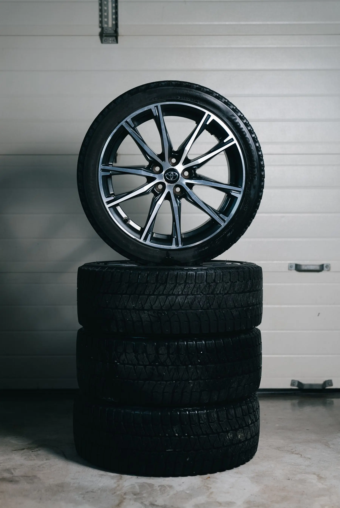
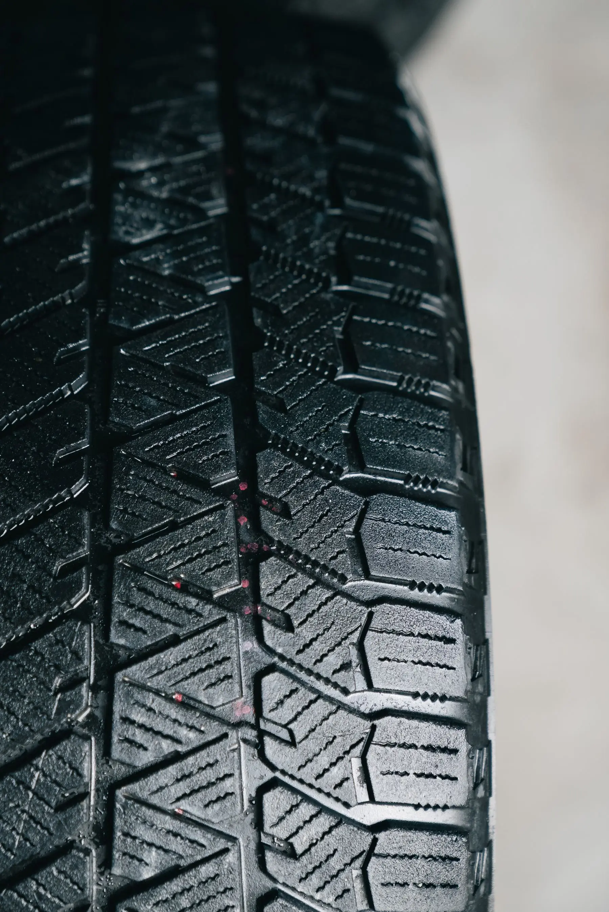

New Tires
Request new tire options by size, quantity, brand and preferred shop. Availability is confirmed before you make the trip.
VIEW SERVICE →
TIRES 4 LESS · CHARLOTTE + CONCORD
Tires 4 Less offers new and used tire options plus tire installation, rotation, balancing, flat repair, TPMS service and Fleet & Commercial tire support. Tire availability changes, so send the size, quantity and preferred location for confirmation before you make the trip.
TIRE SECTION
Start with New or Used Tires when you need tire options, then use the Tire Services catalog for installation, rotation, balancing, repair or TPMS.
Request new tire options by size, quantity, brand and preferred shop. Availability is confirmed before you make the trip.
VIEW SERVICE →Used tire options change often. Send the size, quantity and preferred location so the shop can confirm current choices.
VIEW SERVICE →Mount the tires you have selected, with vehicle and tire details included in the service request.
VIEW SERVICE →Rotate tire positions as part of routine tire maintenance or when wear patterns deserve a closer look.
VIEW SERVICE →Address tire-and-wheel balance concerns that can contribute to vibration. Alignment is a separate Freedom Drive service.
VIEW SERVICE →Start with a puncture, leak or pressure-loss concern. The shop determines whether repair or replacement is appropriate.
VIEW SERVICE →Request TPMS sensor replacement, relearn or programming with the vehicle and warning-light details.
VIEW SERVICE →Fleet tire requests for work vehicles, including tire size, quantity and preferred service location.
VIEW SERVICE →Commercial truck tire service for semi-trucks, box trucks and other work vehicles.
VIEW SERVICE →Basic commercial-truck maintenance requests routed through the selected Tires 4 Less location.
VIEW SERVICE →CHOOSE YOUR TIRE PATH
Not every customer needs the same tire or the same next step. This page routes you into the dedicated path without forcing everything into one generic product list.
VALUE / RELIABLE
Check current used-tire options by size and preferred shop.
EXPLORE USED TIRES →
NEW TIRES / BRAND OPTIONSCLEAN / PREMIUM / NEW
Start with size or vehicle and compare available new-tire options.
EXPLORE NEW TIRES → SEMI & COMMERCIAL TIRES
SEMI & COMMERCIAL TIRESHEAVY DUTY / CAPABLE
Commercial tire requests for semi, box-truck and other work vehicles.
COMMERCIAL TIRE PATH → TIRE REPAIR / FLAT & LEAK
TIRE REPAIR / FLAT & LEAKFLAT / LEAK / DAMAGE
If the issue is air loss, a puncture or damage, start with inspection instead.
TIRE REPAIR →USED TIRES
Used tires are an availability-driven purchase. Size, condition, brand and tread can vary, so the right first move is checking the current options rather than relying on a static catalog that may not match current shop inventory.
NEW TIRES
New tires get their own premium path so size, vehicle, brand preferences and installation can be handled without mixing the new-tire process into the used-tire path.
SEMI & COMMERCIAL
Semi, box-truck and commercial tire needs should not be treated like a passenger-car product page. Start with the vehicle, tire size and quantity so the team can route the request correctly.
COMMERCIAL TIRES →TIRE REPAIR
Nails, screws, leaks or visible damage can change the right answer completely. Start with inspection before assuming the tire needs replacement.
TIRE REPAIR →Start with the actual damage or pressure issue.
Repairability depends on the tire and the damage.
If replacement makes more sense, move into Used or New Tires.
TIRE SIZE GUIDE
You usually do not need a complete vehicle database just to begin. A tire-size string such as 225/45R17 gives the shop the key dimensions to start checking availability. Final fitment is confirmed against the vehicle and tire.
USE THE TIRE FINDER →Approximate tire width in millimeters.
Sidewall height expressed as a percentage of width.
Wheel diameter in inches.
WHERE TO START
Choose Freedom Drive, North Tryon or Concord for the availability request. The selected shop confirms the actual tire options before you make the trip.
CHARLOTTE · FREEDOM DRIVE
1627 Freedom Drive
Charlotte, NC 28208
CHARLOTTE · NORTH TRYON
1010 N Tryon St
Charlotte, NC 28206
CONCORD · CABARRUS AVE
241 Cabarrus Ave W
Concord, NC 28025
GOT THE SIZE?
Use the request form to send your tire size, new/used preference, quantity and location. The team confirms actual availability.
COMMON QUESTIONS
Quick answers about Tires Hub, based on the current Tires 4 Less service and location rules.
Yes. New Tires and Used Tires use separate availability paths so the shop can confirm the current options for your size and quantity.
Send the tire size, quantity, new/used preference, preferred location and your contact information. Vehicle year/make/model is helpful if you do not know the exact size.
Not currently. Tire availability is confirmed by the shop after you submit the request.
The Tire Services catalog includes Tire Installation, Tire Rotation, Tire Balancing, Flat Tire Repair / Plugging & Patching, and TPMS Sensor Replacement, Relearn & Programming.
Yes. Fleet Tire Service and Commercial Truck Fleet Tire Service are part of the confirmed commercial tire catalog.